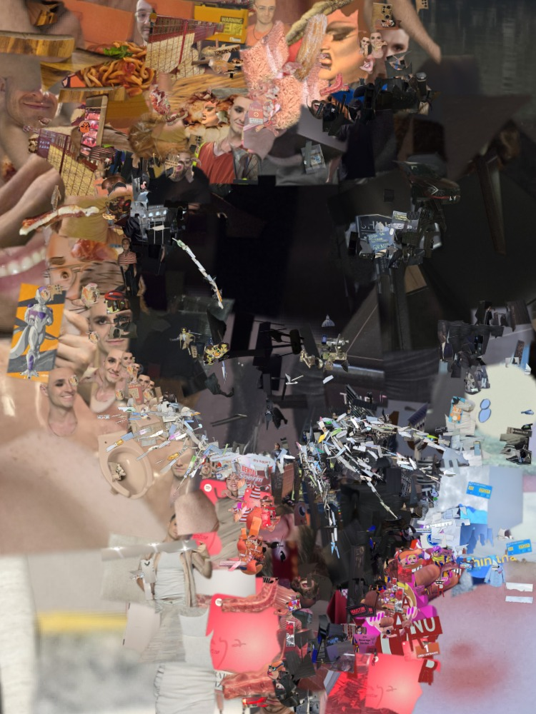
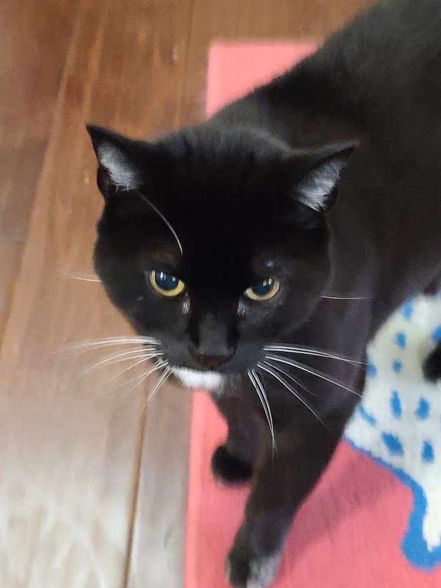
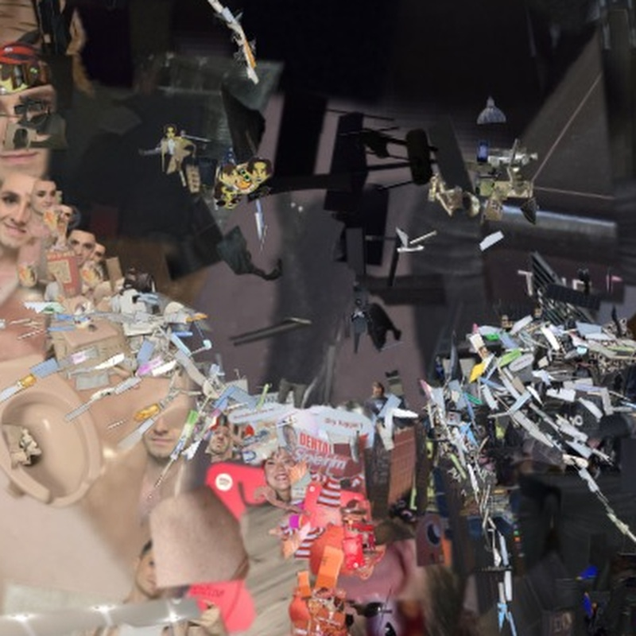
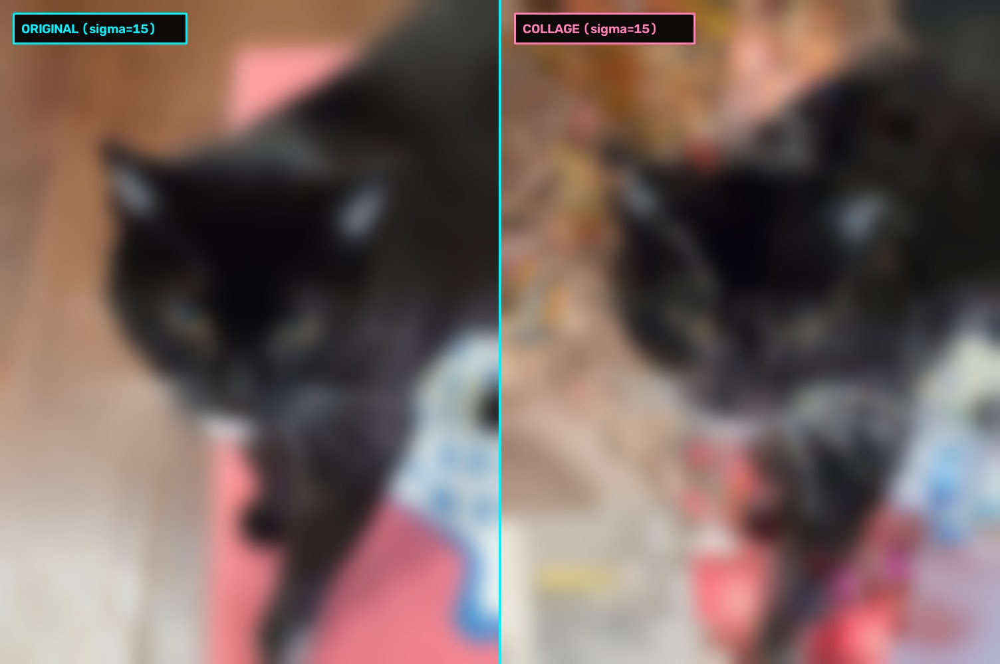

Life Sequencer
Draw a pattern and watch pixel notes flourish or die, in a musical scale of your choice.
Microbe Beats
Simulated organisms are scanned by a playhead. Choose how fast they move, the drumkit sounds, and the BPM.
ASCII PORTRAIT
Use a webcam or upload an image to turn it into typography. Manipulate the tone with sliders and a curve.
Formats: JPG, PNG, WEBP
POSITION SUBJECT
CRANK THE AI
Type a prompt to make something stupid.
ADVANCED SETTINGS
Camera Collage
I gave Antigravity 3,333 unfiltered photos from my camera roll, indexed 7,933 distinct objects inside them, then fed it reference images to recreate in a multi-pass computer vision reality scrambler. Don't look too close! Or do. That's sorta the point of this isn't it, you little voyeur?

COLLAGE (MEMORY DUMP)
ORIGINAL PHOTO

Camera roll #1,402: A dimly lit dive bar bathroom. Selected by the algorithm to form the peach-beige specular highlight on the cat's cheek.
The Premise: The Junk Drawer of Modern Life
(Or: I gave an AI my entire camera roll and now it's using my shame as oil paint.)
Most digital photo mosaics are polite, sterile, and boring. You know the drill: an algorithm chops a portrait into a neat little checkerboard of squares, matches color histograms to a database of curated stock photos, and slaps an ugly semi-transparent color tint over everything so you don't notice it didn't actually work. It feels like a corporate PowerPoint template from 2004—flat, predictable, and devoid of tactile life.
This project started from a much messier, considerably more embarrassing question: What happens when your artistic palette is purely the raw, unfiltered junk drawer of your real life?
I handed Antigravity 3,333 completely uncurated photos straight from my camera roll. No PR scrub. No deleting unflattering angles, accidental pocket bursts, or weird lighting so I look like an auteur. The computer vision pipeline sliced through my personal archive and indexed 7,933 distinct segmented objects—a forensic time capsule of my existence. Cursed memes saved at 2 AM, dive bar bathroom graffiti, accidental close-ups of thumbs, Puget Sound ferry decks, friends laughing mid-sentence, dog snouts, torn grocery receipts from midnight Safeway runs, yellow supermarket clearance meat stickers, bumper stickers ("SUBARU", "My life is WORTHLESS, I will KILL US both"), and late-night selfies where the smoky eyeliner was maybe a little too ambitious.
Then I instituted a strict Zero Exclusion Rule: nothing gets filtered out for politeness or vanity. If an object was cut out, it was thrown into the hopper. The placement algorithm has zero human decency; it only knows CIELAB color math. If the shadow under someone's cheekbone matches the exact luminance of a half-eaten burrito, congratulations: that cheekbone is now a burrito. Don't look too close! Or do. That's kinda the whole point, isn't it, you little voyeur?
The Engine: Two-Phase Pyramidal Optical Feedback
(Or: How to stop an RTX 4060 GPU from generating expensive confetti.)
If you blindly throw 10,000 tiny cutouts at a blank canvas, your computer vision model hasn't made art—it’s generated high-frequency visual static. Traditional mosaic tools fail because they don’t understand scale hierarchy; they just sprinkle small images everywhere and pray your optic nerve forgives them.
To solve this, I engineered a hierarchical 7-tier pyramid engine running on an RTX 4060 GPU. The engine operates like a master oil painter building up an underpainting: massive foundational masses first, microscopic cosmetic surgery last. At every single scale tier, the engine runs a relentless, self-critical Two-Phase Feedback Loop:
- Phase A (Structural Staging): The engine computes local spatial gradient tangents and optical luminance across the reference. Using dense non-maximum suppression, it lays down massive anchor cutouts—car doors, sofa cushions, bus windows—to establish the gross anatomy of the subject without worrying about fine detail yet.
- Phase B (Heatmap Discrepancy Correction): Instead of immediately shrinking the cutout size and moving on, the engine pauses and computes a real-time ΔE error heatmap in CIELAB color space. It looks at what it just placed, spots every pocket where the color drifted or the contrast blew out, and immediately slaps down emergency corrective patches at that exact same scale tier before daring to advance.
By forcing the algorithm to fix its own architectural mistakes before moving to finer detail passes, peak discrepancy outliers (P90 error) plummet by over 70%. In 13 to 20 seconds of raw GPU compute, a pile of random personal detritus snaps into an unmistakable, lifelike human portrait.
The Secret: The Gestalt Blur Test
(Or: The 2 AM Dive Bar Squint Test.)
In human visual neuroscience, your Fusiform Face Area (FFA) and object-recognition pathways don’t decode faces by counting skin pores; they read Low Spatial Frequency (LSF) chiaroscuro first. Before your conscious eye detects a single sharp boundary, your visual cortex has already cataloged the broad masses: the deep shadow cavity of an eye socket, the glowing crest of a forehead, or the silhouetted wedge of a cat's ear.
If that low-frequency foundation is broken, you can paste a million razor-sharp micro-cutouts on the canvas and it will still look like visual mush. This is what I call the Gestalt Blur Test—or the dive bar test. If you take off your glasses, or squint at someone across a dimly lit room, or run a heavy Gaussian blur (σ ∈ {1, 3, 7, 15, 30}) over the canvas, does it still instantly read as the subject?
Every collage in this engine was subjected to this exact benchmark. If the σ=15 blurred collage doesn't match the blurred reference like a mirror image, the run is rejected. The individual pieces can be pure absurdity (a parking ticket, a dive bar toilet rim, a cat's paw), but as long as their collective Gestalt luminance curve matches the reference, your brain fills in the rest of the magic.
The 5 Milestones: Anatomy of the Absurd
(Five distinct visual torture tests, five radically different solutions.)
1. Heavy (Theatrical Drag in Vintage Black-and-White Chiaroscuro): 10,735 pieces composited across 14 phases in 20.2 seconds. A tribute to vintage Seattle nightlife and stage drama. The razor-sharp cat-eye wings, dramatic arched brows, and glossy lips aren't black ink—they're micro-sliced columns of newspaper obituary text, vintage camera lenses, and candid faces. Her voluminous, sculpted bouffant hair is constructed out of King County Metro bus flanks, velvet living room armchairs, and nocturnal streetscapes. Her overexposed white satin gloves? Layer upon layer of overlapping supermarket receipts.
2. Wedding Groom (Friend Getting His Tie Tied): 6,348 pieces composited in 13.1 seconds. Capturing a close friend having his burgundy floral tie straightened moments before walking down the aisle. The emotional resonance here is literal: the groom's serene, contemplative face is assembled out of dozens of miniature candid portraits of close friends from years of house parties and late-night hangs. His tie is intricately woven from red wine bottle labels, menus, and fabric shreds, pinned by an amber-and-metal bee brooch on a sage linen lapel.
3. Crushworthy Pop Models (Dual Studio Portrait): 7,635 pieces in 13.2 seconds. An ultra-clean, punchy dual fashion editorial. The pristine white studio backdrop looks seamless from six feet away—until you zoom in and discover it’s constructed entirely from torn envelopes, Safeway paper, and actual unpaid Seattle parking violation notices. Against that bureaucratic white void, chartreuse mullet tips (tennis ball felt and neon highlighter) and hot-pink bandana graphics snap with razor-sharp vector-grade boundary alignment.
4. Black Cat & Whiskers: 1,338 pieces composited in 3.95 seconds. The ultimate computer vision torture test: how do you render sub-millimeter white whiskers across pitch-black fur without turning them into chunky gray pixel blocks? The engine solved this with Tangent-Aligned Filament Chaining—hunting down extreme aspect-ratio paper slivers (up to 14:1) and specular reflections from dive bar toilet porcelain, stringing them along the whisker vector like beads on a wire.
5. Tomato Still Life: 1,218 pieces in 4.24 seconds. A luscious, glossy heirloom tomato resting on a kitchen table. The deep, translucent red flesh and the watery locule seed cavities look appetizing right up until you inspect the DNA: the fibrous tomato pulp is rendered from marbling in raw butcher-shop pork ribs, and the seeds are neon yellow supermarket clearance discount tags ("MANAGER'S SPECIAL"). It’s juicy, photographic, and delightfully cursed.
The Receipts: Quantitative Convergence Metrics
Cold hard math proving this isn’t just smoke and mirrors. Across every subject, optical discrepancy dropped between -33% and -62%, converging from raw chaos into photorealistic coherence in under twenty seconds:
| Subject | Resolution | Cutouts | Initial ΔE | Final ΔE | Error Reduction | GPU Time |
|---|---|---|---|---|---|---|
| Black Cat & Whiskers | 750×1000 | 1,338 | 41.82 | 27.52 | -34.2% | 3.95 s |
| Tomato Still Life | 1000×1000 | 1,218 | 88.88 | 41.56 | -53.2% | 4.24 s |
| Heavy (B&W Drag) | 1000×1000 | 10,735 | 49.28 | 32.94 | -33.1% | 20.2 s |
| Wedding Groom & Tie | 1024×682 | 6,348 | 60.69 | 27.78 | -54.2% | 13.1 s |
| Crushworthy Pop Models | 1024×1024 | 7,635 | 69.61 | 26.09 | -62.5% | 13.2 s |
Memory is messy, embarrassing, and granular. Computer vision doesn’t have to sanitize it.
TOPOLOGICAL ARPEGGIATOR
Sculpt a tumbling liquid-metal body in 3D space. The geometry secretly modulates the synthesizer's arpeggiator engine, scaling notes, pitch glide, harmonic bite, and temporal drift.
MIDI GENRE MORPHER
Pick an iconic composer (or upload a .mid file) and morph it into a preset genre or type your own custom AI style. The main melody leads the mix while the AI builds the groove, bassline, and chords underneath.